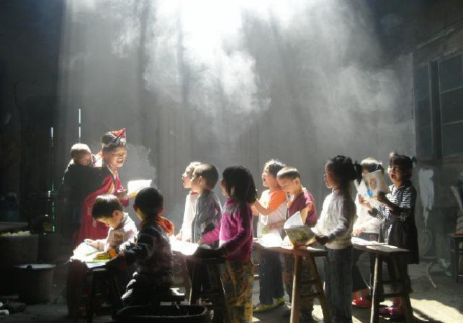
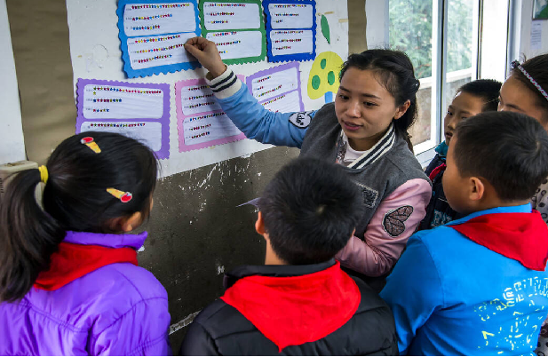
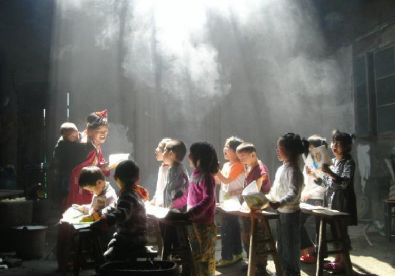
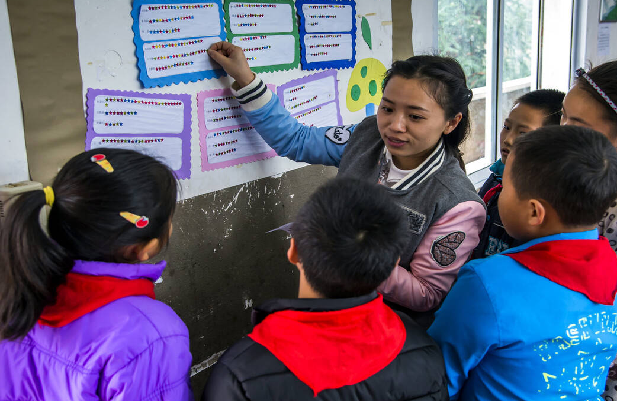

希望园丁
“希望园丁教师关爱工程”是国内部分名师名校长参与发起、以推动基层学校高质量发展、关爱基层教师身心健康和专业成长为宗旨的专项公益活动。作为北京市红十字基金会博爱教育基金管理的公益项目，主要为基层学校和教师提供：办学理念和学校治理咨询，专业/学科名师指导培训；家校协同、儿童青少年心理健康指导、学业生涯规划指导讲座培训；基层教师跨校研修学习；基层校长交流研讨；基层教师健康咨询关爱等服务。作为拥有教育发展头部资源的共享服务平台，“希望园丁”致力于为中国基础教育、职业教育的发展贡献自己的专业力量。
 



核心使命与愿景
我们也许做不了太多。但我们可以为他们送去一束光。
我们可以走到他们身边，帮他们打开一扇看到更大世界的小窗；
我们可以帮他们对接一些资源，给他们的职业成长助一把力；
我们可以给他们一些关爱，让他们对职业多一份信心和热情，少一点无助和彷徨。
成果展示
挖掘全国优质学校特色，树立行业标杆，通过权威渠道展示育人成果。
科研成果转化
推动教育科学研究成果在实际教学场景中的落地与应用，连接理论与实践。
教育扶贫
定向援助贫困地区师生，提供资源支持与师资培训，助力教育均衡发展。
权威媒体出口
携手新华网、中国教育报等顶级媒体，让优秀的教育故事被全社会听见。
成果展示
我们将每一份爱心转化为实际的教育资源，点亮孩子们的未来。
贵州省台江民族中学
高考中榜优秀学生助学
浙江平湖基础教育
调研指导
北京丰台区图书馆组织学校向贵州台江城关五小捐赠图书
用数据见证改变
公益项目
微光讲堂
组织名校名师和社会英才，到基层与教师交流互动
小荷工程
优秀基层教师职业成长计划，包括建立外部导师制，线上线下指导，假期到外地学校参观学习、专业交流等
雨露计划
为长期扎根基层教育的优秀教师发放岗位奖励
松柏计划
组织面向基层教师的健康科普、肿瘤早筛等系列健康关爱行动
战略合作与媒体支持